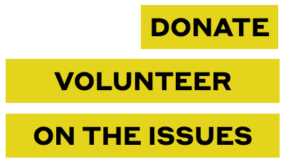
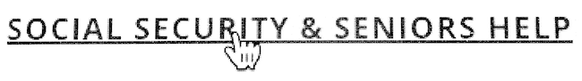

Disability rights: just a campaign slogan?
Do candidates respect disability rights, or only advocate them?
Introduction
On Day One, I will introduce legislation to repeal the Americans with Disabilities Act.
That is a campaign pledge you have probably never heard. On the contrary, candidates for public office often claim that, if elected, they will work to expand the rights of people with disabilities.
That’s what they say. Do they act accordingly?
An example
Six candidates are actively seeking to represent the 12th Congressional District of New York (the middle of Manhattan) in the U.S. House of Representatives. Four of the six are on the record (on their campaign or official websites) advocating more rights and benefits for people with disabilities, to wit:
- Carolyn Maloney:
Carolyn has always stood alongside the disability community and has fought to ensure that their rights are protected in NY-12 and around the nation. She has co-sponsored legislation to benefit communities around the country and pressured MTA leadership to make the subway system more accessible.
- Jerrold Nadler:
Rep. Nadler has also been a life-long advocate for the differently-abled, shepherding the Americans with Disabilities Act Restoration Act of 2007 through the House.
- Suraj Patel:
We must defend the rights of Americans with disabilities, and expand them to include greater agency in their own lives, better education options, and improved access to the political process.
- Ashmi Sheth:
I am a person with a disability. … Expand Protections and Support for People with Disabilities. Expand who receives benefits from the Office for People with Developmental Disabilities (OPWDD). Increase funding for OPWDD for more resources and funding to properly support the lives of people with disabilities.
Turning ideas into action
Candidates have a superb opportunity to demonstrate practical respect for people with disabilities by making their own campaign websites disability-friendly. Candidates do, after all, control their websites, so, if their websites discriminate against people with disabilities, candidates cannot shift the blame or claim lack of authority.
The standards for making websites usable by people with disabilities are well established. They overlap largely with the standards for high-quality web design and implementation. The term that describes any digital content that conforms to these standards is accessible.
Findings
On 3 July 2022, I ran a batch of automated accessibility tests on the campaign website home pages of the six House candidates in New York’s 12th District.
My procedure generated a score for each page. The lower the score, the better. A score of 0 would indicate that a page passed all the tests.
All the pages failed some tests, with the worst score about three times the best score.
In the table below:
- Each name in the
Page
column is a link to the page that was tested. - Each number in the
Score
column is a link to a detailed report.
| Page | Score (lower is better) | |
|---|---|---|
| Suraj Patel for Congress | 436 | |
| Jerry Nadler for Congress | 460 | |
| Vladimy Joseph for Congress | 489 | |
| Ashmi for Congress 2022 | 668 | |
| Carolyn Maloney for Congress | 1163 | |
| Michael Zumbluskas for Congress | 1288 | |
How did they fail?
Here are a few examples of the hundreds of accessibility problems that these tests discovered:
- The Suraj Patel home page does not show you where you have moved to when you press the Tab key. Some disabilities make it impossible to use a mouse, and then it is essential to show an outline that moves as you press the Tab key. In this example,
PRESS
is the currently focused navigation link, which you can click by pressing the Enter key, but nothing visible tells you that.Suraj Patel navigation bar - The Jerrold Nadler home page is missing the required code to identify the language of the page content. Some users need or prefer to have software read the text out loud, but the pronunciation can be mangled if the page language is not identified.
- The Vladimy Joseph home page begins with a string of letters that looks like
VLADIMYJOSEPHFORCONGRESS
. The minuscule spaces between the words are barely visible, and the all-capital typography makes it even harder to parse, especially for a person with a reading disability. - The Ashmi Sheth home page contains text passages that are difficult to read because of substandard contrast between the text and its background. In the first example below, some of the text is almost white-on-white. The website features an
Accessibility Menu
from UserWay, intended to make changes for people with disabilities. This shows concern, but most experts claim that such tools typically do more harm than good. For example, if you use the tool to improve the contrast, it either remains the same or switches to black-on-black, as shown in the second example.Original Ashmi Sheth text Modified Ashmi Sheth text - The Carolyn Maloney home page contains links that open new browser tabs without letting you know in advance. This example shows three links. The first two (
Donate
andVolunteer
) open new tabs, but the third (On the issues
) changes the content in the current tab. An accessible page always tells you what to expect before you click a link. (Another problem: These links look like buttons, so a user might assume that they can be operated with the Space key, but they cannot.)Carolyn Maloney links  - The Michael Zumbluskas home page contains links that seem to be made of letters when you look at them, but if you were blind or dyslexic and using software to read the text aloud you would not know what they say, because they are actually pictures of text. Worse, the pictures are not coded with descriptions readable by user software. Here is an example of such a link. Making it a picture does not make the page more attractive, but does impair its use for some people.
Michael Zumbluskas link 
Conclusion
Do candidates who advocate expansion of disability rights respect those rights in practice more than other candidates? If their websites are an indicator, not much, if at all. Vladimy Joseph says nothing about disability rights, but his score is twice as good as Carolyn Maloney, who declares strong support for the disability community. Advocacy does not necessarily translate into conduct.
As shown by these tests and inspection of the pages, all the candidates have campaign websites with accessibility problems. People with some disabilities will be hampered in navigating and using these sites. And, as some of the examples illustrate, accessibility problems can make websites more difficult for all, not only those with disabilities.
These defects could have been avoided—and could still be repaired—with competent website design and coding, following current technical standards.
But how bad is a score of 436, or a score of 1288? A perfect score of 0 is difficult to get, because even warnings of likely problems add small amounts to a score. So, here are some comparisons with U.S. government website home pages:
- ADA.gov beta site, 159
- Department of Education, 362
- President, 526
- Centers for Disease Control and Prevention, 755
- USA.gov, 803
- Representative Alexandria Ocasio-Cortez, 920
- Library of Congress, 928
- Supreme Court, 1250
- House of Representatives, 2634
How to interpret this? Here is a hunch: When a website owner would be embarrassed by inaccessibility (as would the Department of Justice with its site about the Americans with Disabilities Act), it can get a score three times as good as the best of these candidates. Or, when the owner feels immune to reputational risk or is worried about everything except accessibility, its score can be as bad as, or twice as bad as, the worst of these candidates.
A disclaimer: I cannot claim that these tests are a perfect measure of accessibility, but they mostly come from software that is widely used for accessibility testing (see the reports for details). The scores represent a mixture of other specialists’ and my own estimates of impact on use, especially by people with disabilities.